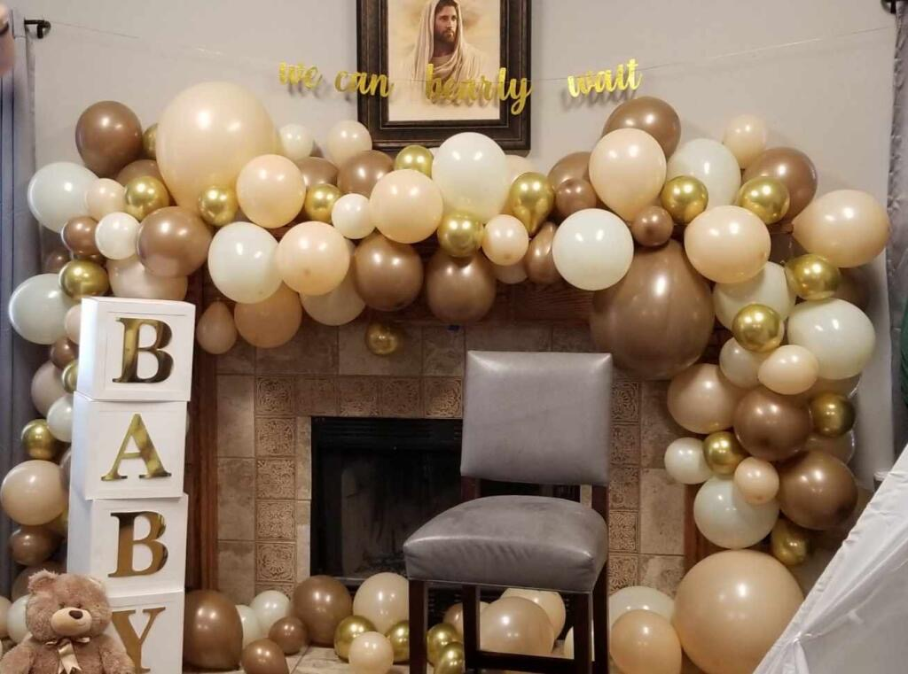
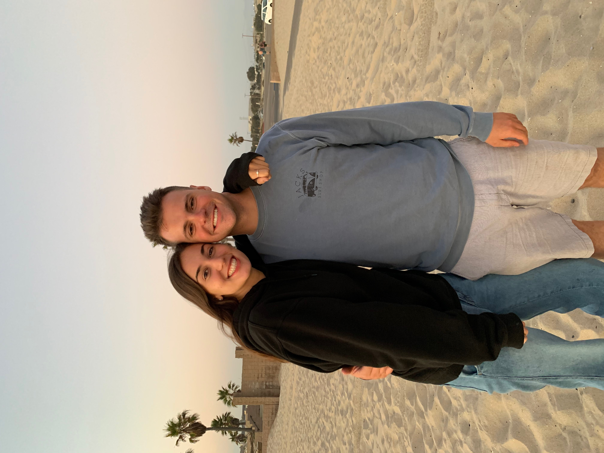
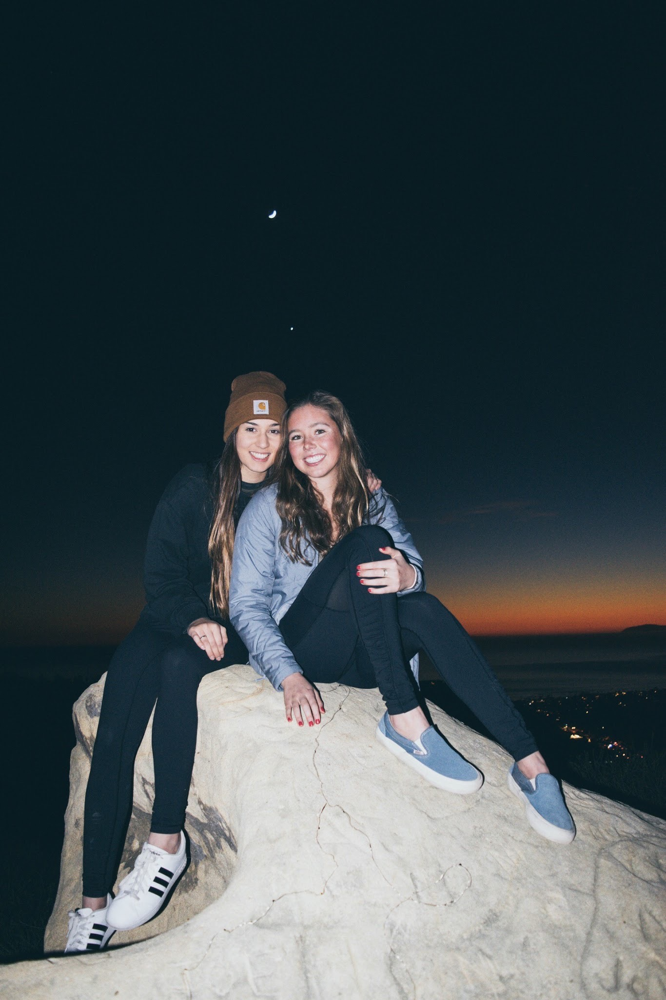

More About Me
The Sunnier Side
Resumes are weird because:
- A person can be totally different in person than on paper
- One page is not enough to show true experience
- It takes a long time to go through every resumes and some may be overlooked
Things about me that aren't on my resume:
- I was born in a small town north of Seattle
- Moved to Huntington Beach, CA when I was 15 (where I fell in love with sunshine)
- After my first year of college I took a break to serve a mission in El Salvador
- On my mission I met people that felt like sunshine who filled my life with light
- My favorite quote is, "Leave people better than you found them"
One day, I asked an older man how he was doing and he smiled and said, "ready for whatever comes next." Since then I've adapted that motto!
After 18 months of living in sunny El Salvador, I moved back to Salt Lake to finish my education. I met, fell in love with, fought for and married
my sweet husband, Jack. And now we are working together every day to build our future and be "ready for whatever comes next".
My Interests Include:
Party Planning

Spending time with my husband

Exploring the Earth
